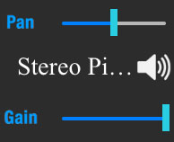

1.  Long press on the staff's instrument name to bring up the instrument chooser.
2. Tap on an instrument name in the list to assign it to that staff.
Discussion: This is how to assign different instruments to each staff. This will override your initial instrument assignments from the score manager. You can also mute, solo, set relative volume (gain), and set the pan for each staff. To mute, tap on the speaker icon. To solo, double tap.
Result: You have learned more uses of the audio panel and the corresponding audio sidebar.